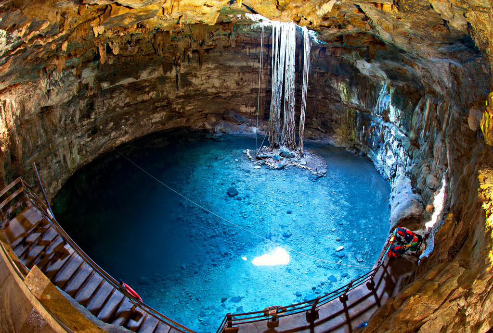
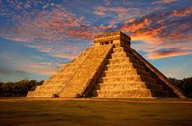
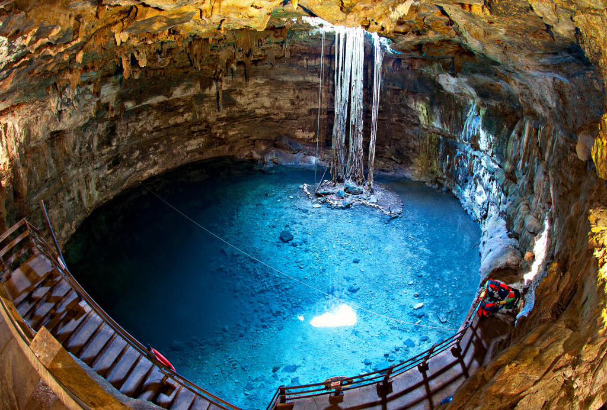
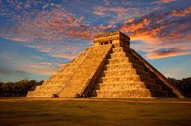

Valladolid:
Conocida como la perla del oriente, se ubica a 163 km de
merida (2 hr y media ). Su gastronomia, sus multiples cenotes y su
cercania a chichen itza (30 min.) lo han convertido en uno de sus
destinos turisticos preferidos. Debe su nombre a la ciudad castellana
del mismo nombre . En valladolid (yucatan ) podras conocer la iglesia
de san Servacio , el convento de san Bernadino de siena, asi como
diversos cenotes entre los que destaca el zaci, el xkeken o dzinup y el
samula Su
extensa gastronomia incluye platillos como el escabeche oriental, el
sak kol o los famosos lomitos de valladolid que atrae a miles de
visitantes.
IGLESIA DE SAN SERVACIO
Es por eso que las escrituras, que representan a San Pedro y San Pablo ahora se observan en los costados ya que originalmente custodiaban la entrada del templo.
san Pedro y San Pablo en donde se encontraba la entrada principal del templo. La iglesia esta hecha de mamposteria y adornada de piedras labradas, se dice que las piedras con las que se hicieron este y otros templos fueron de antiguas construcciones mayas.
En una de las torres de la iglesia dice que tiene un cañon fue usado durante el levantamiento para recuperar la ciudad en 1848, en manos de los indios reveldes que iniciaron la guerra de castas. El reloj es del siglo xvll y se ha mantenido en funcionamiento por relojeros locales de la ciudad.
CENOTES EN VALLADOLID
CENOTE ZACI
CENOTE ZACI: Se encuentra en el corazon de valladolid , se distingue por ser una de las bellezas naturales a cielo abierto, mas grandes e impresionantes que te puedes encontrar de este maravilloso oriente maya. El acceso a sus increibles aguas color turquesa es por un tunel o gruta en donde puedes gozar de las formaciones de estas estalactitas, que cuelgan de su techo rocoso, y que se encuentran por una increible cantidad de plantas exoticas que caen desde la superficie y lo hacen ver mas atractivo, sin duda un exelente lugar que puedes visitar con la familia, pareja o amigos, ya que sus alrededores son libres para interactuar conocer y disfrutar de sus panoramas llenos de belleza natural.
EL CENOTE DE XKEKEN
Mejor conocido como la cueva azul, impactara a plena instancia. Sus hermosas aguas de color turqueza y el sorpredente destello de luz que se refleja desde lo mas alto, hacen de esta caverna una inigualable tesoro natural que debes conocer. Dentro de el pues puedes encontrar una gran variedad de estalacticas que cuelgan desde lo mas alto, y aunque el no es lo mas suficientemente profunda para bucear , es excelente para nadar y explorar sus bellos espacios. Eltan solo entrar a este cenote, causara en ti una sensacion de aventura y adrenalina , ya por ser una caverna muy subterranea el unico acceso a ella es a traves de un agujero estrecho de escalinatas. ¡magnifico para las personas que disfrutan de vivir experiencias extremas.
CENOTE SAMULA

El CENOTE SAMULA: Es una esplendorosa caverna subteranea dotado de una belleza natural que difinitivamente no podias olvidar. Su magnifica estructura relata el cominezo de lo maravilloso que sera al adentrarse a ella. Tan solo en sus primeros escalones, notaras el espectacular panorama circular que denota este deslumbrante lugar ,unos pasos mas adelante disfrutaras de una vista llena de tranquilidad y paz, donde puedes contemplar las raices que cuelgan desde el techo y tocan sus aguas de color turquesa.. En los ultimos escalones gozaras del exelente contactocon sus bellas aguas cristalinas que te incitaran a darte un chapuzon, te aseguro no pasaras por el alto a este fantastico lugar.
CENOTE DE OXMAN
EL CENOTE OXMAN: Es un paraiso que no pudes perder.A simple vista te empapara con su espectacular belleza natural, que sera inevitable olvidar, ya que su estructura del cielo abierto te maravillara con el contraste entre el reflejo del sol y su refrescante y cristalina agua. a sus alrededores puedes encontrar un pequeño mirador al que denota a una asombrosa vistas de de divrrsas perspectivas, sin duda, una de las mejores opciones para pasar un rato magnifico en compañia con tus seres queridos.
CENOTE DE SUYTUN
CENOTE DE SUYTUN: El cenote de suytun es un bello lugar que se distingue por su peculiar centro de piedra, motivo por el cual fue nombrado como suytun, termino que deriva del lenguaje maya, y es reconocido como uno de los cenotes ceremoniales mas importantes. En este maravilloso vestigio, encontraras visitas rodeados de hermosas aguas cristalinas, que apeasr de ser pocas profundas te maravillaran con la cantidad de peces que viven dentro de ellas. Suytun es el unico lugar donde podras encontrar en su exterior cabañas y un pequeño museo donde se exiben asombrosas piezas arqueologicas precolombinas.

CHICHEN ITZA: La piramide de chichen itza es el mayor calendario del mundo, cada uno de sus lados tiene 91 escalones, mas uno para acceder a su templo superior, que se encuentra encima dando un total de 365. El motivo de su construccion fue la de contar con un lugar donde poder adorar y rendir culto a su dios kukulcan. Este quedaba representando en enforma de serpiente y por ello esta figura aparece en la decoracion del templo.Acudian ahi desde otras regiones para buscar conocimiento y disfrutar de un entorno pacifico.
CENOTES SAGRADO: En este cenote hay restos esqueleticos procedentes del cenote sagrado, los antiguos mayas utilizaban los cenotes para hacer rituales o sacrificios ya que los consideraba lugares sagrados que conducian a otro mundo. Es pozo abierto de forma natural y bello.
COSTUMBRES Y TRADICIONES DE VALLADOLID, YUCATAN
¿QUE CARACTERIZA A VALLODOLID? Es una ciudad hospitalitaria y llena de historia que enorgullese a yucatan, durante siglos se le ha identificado por la riqueza del legado español plasmado en sus templos y el abolengo de sus viejos barrios. Tiene una excepcional sabor colonial.

DATOS CURIOSOS DE VALLADOLID YUCATAN
IGLESIA DE SAN SERVACIO
La iglesia de san servacio se encuentra en el centro de valladolid
Yucatan. La edificacion de esta iglesia fue en 1545, cuya fachada
original miraba hacia el poniente como muchos templos yucatecos de la
epoca colonial. El templo se demolio en 1705 debido a que dos años
atras se habia cometido dentro de la iglesia "el crimen de los
alcaldes". Razon por la cual se decidio demorerla y reorientar su
entrada principal de acceso al norte en forma de castigo.
Es por eso que las escrituras, que representan a San Pedro y San Pablo ahora se observan en los costados ya que originalmente custodiaban la entrada del templo.
san Pedro y San Pablo en donde se encontraba la entrada principal del templo. La iglesia esta hecha de mamposteria y adornada de piedras labradas, se dice que las piedras con las que se hicieron este y otros templos fueron de antiguas construcciones mayas.
En una de las torres de la iglesia dice que tiene un cañon fue usado durante el levantamiento para recuperar la ciudad en 1848, en manos de los indios reveldes que iniciaron la guerra de castas. El reloj es del siglo xvll y se ha mantenido en funcionamiento por relojeros locales de la ciudad.
CENOTES EN VALLADOLID
CENOTE ZACI
CENOTE ZACI: Se encuentra en el corazon de valladolid , se distingue por ser una de las bellezas naturales a cielo abierto, mas grandes e impresionantes que te puedes encontrar de este maravilloso oriente maya. El acceso a sus increibles aguas color turquesa es por un tunel o gruta en donde puedes gozar de las formaciones de estas estalactitas, que cuelgan de su techo rocoso, y que se encuentran por una increible cantidad de plantas exoticas que caen desde la superficie y lo hacen ver mas atractivo, sin duda un exelente lugar que puedes visitar con la familia, pareja o amigos, ya que sus alrededores son libres para interactuar conocer y disfrutar de sus panoramas llenos de belleza natural.
EL CENOTE DE XKEKEN
Mejor conocido como la cueva azul, impactara a plena instancia. Sus hermosas aguas de color turqueza y el sorpredente destello de luz que se refleja desde lo mas alto, hacen de esta caverna una inigualable tesoro natural que debes conocer. Dentro de el pues puedes encontrar una gran variedad de estalacticas que cuelgan desde lo mas alto, y aunque el no es lo mas suficientemente profunda para bucear , es excelente para nadar y explorar sus bellos espacios. Eltan solo entrar a este cenote, causara en ti una sensacion de aventura y adrenalina , ya por ser una caverna muy subterranea el unico acceso a ella es a traves de un agujero estrecho de escalinatas. ¡magnifico para las personas que disfrutan de vivir experiencias extremas.
CENOTE SAMULA

El CENOTE SAMULA: Es una esplendorosa caverna subteranea dotado de una belleza natural que difinitivamente no podias olvidar. Su magnifica estructura relata el cominezo de lo maravilloso que sera al adentrarse a ella. Tan solo en sus primeros escalones, notaras el espectacular panorama circular que denota este deslumbrante lugar ,unos pasos mas adelante disfrutaras de una vista llena de tranquilidad y paz, donde puedes contemplar las raices que cuelgan desde el techo y tocan sus aguas de color turquesa.. En los ultimos escalones gozaras del exelente contactocon sus bellas aguas cristalinas que te incitaran a darte un chapuzon, te aseguro no pasaras por el alto a este fantastico lugar.
CENOTE DE OXMAN
EL CENOTE OXMAN: Es un paraiso que no pudes perder.A simple vista te empapara con su espectacular belleza natural, que sera inevitable olvidar, ya que su estructura del cielo abierto te maravillara con el contraste entre el reflejo del sol y su refrescante y cristalina agua. a sus alrededores puedes encontrar un pequeño mirador al que denota a una asombrosa vistas de de divrrsas perspectivas, sin duda, una de las mejores opciones para pasar un rato magnifico en compañia con tus seres queridos.
CENOTE DE SUYTUN
CENOTE DE SUYTUN: El cenote de suytun es un bello lugar que se distingue por su peculiar centro de piedra, motivo por el cual fue nombrado como suytun, termino que deriva del lenguaje maya, y es reconocido como uno de los cenotes ceremoniales mas importantes. En este maravilloso vestigio, encontraras visitas rodeados de hermosas aguas cristalinas, que apeasr de ser pocas profundas te maravillaran con la cantidad de peces que viven dentro de ellas. Suytun es el unico lugar donde podras encontrar en su exterior cabañas y un pequeño museo donde se exiben asombrosas piezas arqueologicas precolombinas.

CHICHEN ITZA: La piramide de chichen itza es el mayor calendario del mundo, cada uno de sus lados tiene 91 escalones, mas uno para acceder a su templo superior, que se encuentra encima dando un total de 365. El motivo de su construccion fue la de contar con un lugar donde poder adorar y rendir culto a su dios kukulcan. Este quedaba representando en enforma de serpiente y por ello esta figura aparece en la decoracion del templo.Acudian ahi desde otras regiones para buscar conocimiento y disfrutar de un entorno pacifico.
CENOTES SAGRADO: En este cenote hay restos esqueleticos procedentes del cenote sagrado, los antiguos mayas utilizaban los cenotes para hacer rituales o sacrificios ya que los consideraba lugares sagrados que conducian a otro mundo. Es pozo abierto de forma natural y bello.
COSTUMBRES Y TRADICIONES DE VALLADOLID, YUCATAN
| *FIESTA DE VIRGEN DE CANDELARIA |
FIESTA DE GREMIOS |
FESTIVIDAD ALA VIRGEN DE LA ASUNCION |
SEMANA SANTA |
FIESTA DE SANROQUE |
FIESTA DEL NIÑO DIOS |
¿QUE CARACTERIZA A VALLODOLID? Es una ciudad hospitalitaria y llena de historia que enorgullese a yucatan, durante siglos se le ha identificado por la riqueza del legado español plasmado en sus templos y el abolengo de sus viejos barrios. Tiene una excepcional sabor colonial.
DATOS CURIOSOS DE VALLADOLID YUCATAN
Se incorporo al programa pueblos magicos en el año 2012. Valladolid es
la segunda ciudad en importancia de yucatan y las mas antigua del
estado. Fue fundado en 1543 por Francisco de Montejo el sobrino y el
antiguamente estaba habitada por los cupules en un sitio conocido como
Chauac Ha parte de cacicazgo maya.